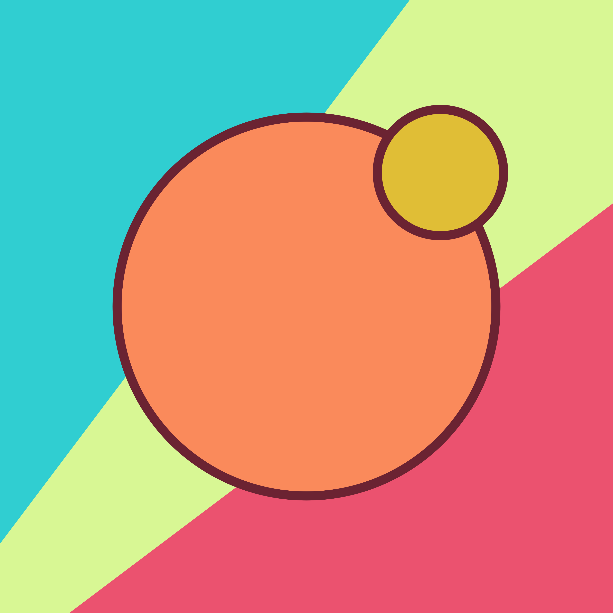

Charlotte Hadley

Charlotte Jane Hadley
She/Her
charliejhadley
0000-0002-3039-6849
Hey! I’m Charlotte 🙋♀️
I love data, open science and reproducible data pipelines. While my name is Charlotte, I’m more generally known as Charlie and @charliejhadley online.
I’m proud of my work coaching and empowering others to tell data stories and become fluent in reproducible code.
Fancy getting in touch? Say hello@gpcds.com.
LinkedIn Learning Courses
I’ve been recording training courses for LinkedIn Learning since 2016. Access to these courses is available through a LinkedIn Premium subscription or can be purchased a la carte. Many Universities provide students and staff with free access to LinkedIn Learning - check with your IT department.

Work timeline
-
2012

-
2015

-
2017

-
2022

-
2025
Talks, workshops and projects
Give me an opportunity to be enthusiastic about something, and I’ll take it. Here’s a potted history of my talks, workshops and projects.
2022
Visiting Lecturer: Birmingham City University
In 2022 I'm debuting my MSc module ENG7218 Data Science for Healthcare Applications as a visiting lecturer at Birmingham City University.
2021
R in 3 Months
Since 2021 I've been co-instructor on the awesome R in 3 Months program, which runs twice a year in the Spring and Fall. Each intake has 50+ students who submit weekly assignments and participate in both synchronous and asynchronous weekly content. I'm primarily responsible for weekly feedback and it's the most fun I have teaching each year. I definitely recommend joining the course.
2019
Job change: Full-time self-employed at Visible Data Ltd
From mid 2019 I've been working as a full-time independent data science consultant and trainer through my consultancy Visible Data Ltd. I primarily partner with third-party training providers but please do get in touch if you would like custom courses directly. Since 2021 I've also been working on consultancy projects via R for the Rest of Us
R-Ladies: Chicago
Talk about using R to create interactive data visualisations with htmlwidgets and {shiny}.
DHoxSS 2019
Invited talk at DHoxSS about data visualisation to increase research impact.
BristolR
Talk about building reproducible data visualisation workflows with R and {shiny}.
rstudio::conf workshop
As part of my CPD I attended this workshop from RStudio designed to train folks in how to train others to use {shiny}.
2017
Job Change: Service Delivery Manager at University of Oxford
After successfully managing the Live Data pilot project I was promoted to Service Delivery Manager for the newly instated Interactive Data Network. The pilot project only provided sufficienct resources for a small-scale service. I was responsible for growing the reputation of the data visualisation service and planning sufficienct instructure to develop an University-wide service.
Conference Host: The Missing Link in Publishing: Interactive Data Viz
This conference was designed to launch the Interactive Data Network at University of Oxford. I was responsible for organising and hosting this one day conference, and also delivered a training workshop. The conference invited speakers from the FT, ONS and OPU to discuss how interactive data visualisation is used to engage their audiences and improve the comprehension of data-rich articles.
OSDC Conference Workshop
Invited workshop on using R and data visualisations to explore datasets.
Royal Statistical Society Conference
Invited one day workshop on using R to build interactive data visualisations to tell stories.
2016
IDCC Conference Talk
Submitted talk to the IDCC conference about my successful Live Data pilot project to launch a data visualisation service at University of Oxford.
DHoxSS Workshop
Four day workshop introducing humanities researchers to using the Wolfram Language for analysing and visualising humanities data.
2015
Job change: Research Support Engineer at University of Oxford
In 2015 I joined the Research Support team at University of Oxford as a Research Software Engineer. My daily duties involved supporting researchers in reproducible research methods. Early in my employment I was tasked with being project manager for the Live Data project with the aim of launching a data visualisation service for all researchers at Oxford. This project was successful and led to me being promoted to Service Delivery Manager in 2017.
2014
Visiting Lecturer: American University in Cairo
As part of a program to roll out teaching with Mathematica across the physical sciences I was invited as a visiting lecturer to the American University in Cairo to train lecturers in the Wolfram Language and the CBM pedagogical approach.
2012
Job change: Technical Consultant at Wolfram Research
In 2012 I joined Wolfram Research as a pre-sales technical consultant. Initially I was primarily responsible for developing and delivering customer-personalised technical demonstrations of Mathematica, including at C-level meetings. I also revamped several of the commercial training courses, and taught on the CQF program. Towards the end of my employment I was a senior consultant working on-site to build products for customers.
Testimonials
Charlie’s expertise of R made the training session I had absolutely brilliant! We covered a mass of material, without it seeming overwhelming.Data Scientist, Insurance Industry
Charlie’s enthusiasm & passion for all things R, are hard not to get caught up in. I will look forward to reading blogs by Charlie and hopefully attending more trainings in the future.Benjamin Sutton, Brit Insurance
Thank you so much Charlie! I’m really impressed with the quality of this course, and I’ll be referring back to certain videos/topics as they come up in my geospatial journey ;) Thanks again!Data Scientist, Fishing Industry
Thank you for all the help! I feel like searching the internet for help with R is like looking for a very specific needle across a giant field of haystacks, and you both are the metal detectors that get us where we need to be more quickly.Technical Director, Tropical Health
I thank you for the last feedback, I loved it because now I can change the style with css, which I had no idea about. You are a sweetheart, because when I listen to your video I feel light and at peace!Researcher, Plant Science